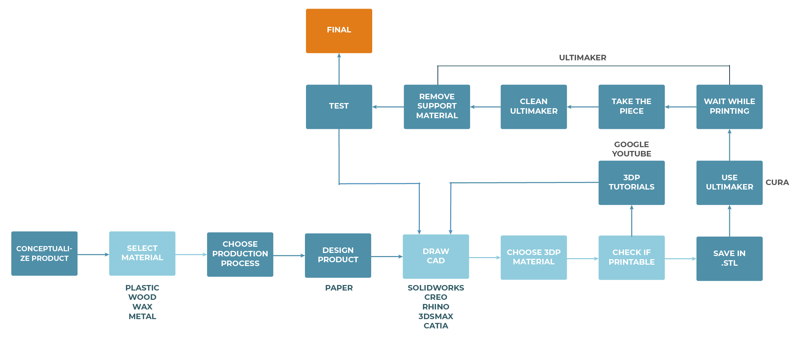
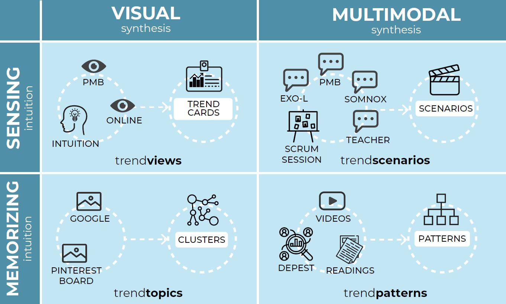
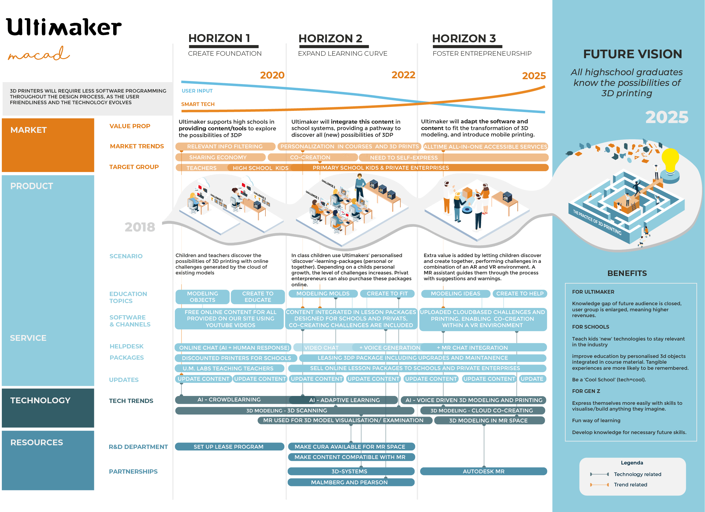
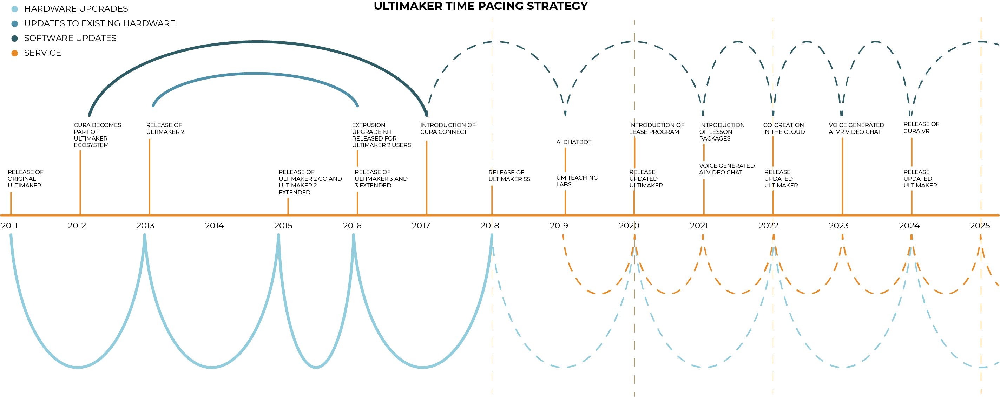

Macad
a design roadmap to help Ultimaker to involve 3D printing technology in pre-university stages.
2018
Ultimaker
3 months
group of 4
Brief
Create a service roadmap for a new product and service development focused on a specific strategic area in order to improve Ultimaker's market position.
Responsibilities
This project was done by a team of four people, wherein my main responsibilities were trend research, ideation, time pacing strategy and roadmapping.
Ultimaker is facing a knowledge gap within their target group; potential users don't know how to 3D print and what the possibilities are. Our project proposes a new concept and strategy to prevent this problem, by involving 3D printing technology in educational stages prior to university.
Process
We started the project conducting a 4C analysis; by analyzing the company, the customers, the context and the competitors, we could spot a opportunity to work on and consequently improve Ultimaker's market position: Ultimaker's target group don't know the full range of possibilities of 3D printing, in terms of mass production or complex printing.
During the customer analysis we created a system architecture from the gathered customer journey, so we could detect the problem spotted previously in it. The boxes coloured in light blue indicate a knowledge gap within the respective stage.
We conducted a Creative Trend Research using 4 different techniques: Trend Views, Trend Scenarios, Trend Topics and Trend Patterns, which involved experts interviews, DEPEST and desk research. We created themes and used them during our ideation sessions.
After planning several ideation sessions, we defined the concept, created a future vision with a coherent storytelling, and we created a strategic roadmap in order to show the steps to achieve that vision.
Results
Ultimakers’ goal is to make 3D printing more accessible for a larger group of enterprises. The problem now is that there is a knowledge gap for a large group of people, they don’t know how to 3D print, what the possibilities are, and what they can use it for. Combining the problem statement and the trend analysis, a future vision was formulated: “All high school graduates know the possibilities of 3D printing”.
During 3 horizons Ultimaker will create educational materials about 3D printing for schools. These materials will exist of challenges, focusing on the possibilities of 3D printing and the student’s expertise, rather than focusing on working with specific CAD programma’s in order to keep the content accessible for everyone.
To achieve this, Ultimaker will adapt their software to new technologies such as mixed reality and will partner up with educational organisations to make their content fit into school systems.
By letting kids get in touch with 3D printing and the brand Ultimaker from an early age, they will get used to using the method in combination with the Ultimaker brand which increases the likelihood to use Ultimaker in a later stage of life and in their future careers. Eventually the knowledge gap will be prevented and 3D printing will be the way to express the new generations creativity and their entrepreneurial mindset.
The roadmap portrays the relationship between the user, the product-service system and the trends over time, divided into 3 horizons.
We created a time-pacing strategy that fits Ultimaker's iteration speed, based on past innovations of Ultimaker. It describes when products and services should be launched, and we encouraged the company to speed up the software development process in order to realize the future vision and to stay relevant.
